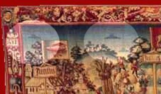
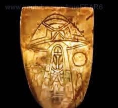

Existen infinidad de evidencias sobre nuestros orígenes, en el pasado, en las civilizaciones antiguas que poblaron este mundo. Pueblos antiguos que estaban en contacto con seres de otro mundo, seres que ellos podían ver y adorar.
Evidencias que muchos optan por verlas como de ciencia ficción, de fantasía. Tan solo por el hecho de que eso nos han hecho creer, como si tuviéramos un chip incorporado que nos han implantado, con teorías y conceptos establecidos hace siglos en nuestras mentes que no nos permiten ver estas evidencias, que están a la vuelta de la esquina, como fantasía, como sacados de una película; sin imaginar que estas películas (fantaseosas a nuestros ojos) están basadas en su matriz, por estas evidencias que insistimos y que dicho sea de paso nos han inculcado como una ilusión.
Las pirámides egipcias por ejemplo, que todos conocen, pero que no muchas personas se cuestionan como fue que los egipcios las construyeron sin la tecnología necesaria para realizar semejante estructura.
La gran pirámide de Giza del faraón Keops fue construida durante su reinado que duro 25 años. Esta pirámide consta de 2.300.000 bloques de piedra caliza con un promedio de peso que va cambiando a medida que los bloques van de la base hasta la cima. Con bloques que en su base pesan 80 toneladas a 1 tonelada en la cima aproximadamente. A un promedio de 25 años se debió formar y transportar algo así como 250 bloques por día.
250 bloques que debían ser cortados y moldeados de tal manera que cada bloque asentara sobre otro de forma tal que ni una hoja de papel entrara entre las grietas de estas. Además del duro trabajo de transportar un promedio de 250 bloques por día desde los más profundo de Arabia. Y no solo transportarlas si no también ubicarlas en su lugar.
No pretendo extenderme mucho sobre este tema, ya que para lograr comprender en su totalidad la magnitud de esta maravilla arquitectónica haría falta un libro, además de su precisión de la forma piramidal y en lo global de toda su creación. Además de los instrumentos de medición que necesitaron para crear tan perfecta obra.
Pero que las pirámides existen, existen y no podemos negarlo. Pero esto me lleva a algo más profundo, más profundo del como las hicieron o que instrumentos usaron; si no a la mera pregunta del ¿Por qué las crearon? ¿Cuál es su significado? ¿Para quienes las crearon?
Los egipcios tenían un profundo vínculo con el mas allá, con la vida después de la muerte y con su vinculación con los dioses. Para llegar a estas preguntas debemos sumergirnos de lleno en sus creencias y en costumbres.
Pero antes de meternos de lleno en estos temas, permítame citar otras civilizaciones antiguas igual de importantes e increíblemente relacionadas entre si.
Los mayas, los Incas, los Aztecas por ejemplo u otras civilizaciones provenientes de Asia, África o de otros rincones del mundo separados entre si por miles de años y por largas distancias, poseían conceptos espirituales, de culto y religión, desde las civilizaciones más antiguas como los Sumerios hasta las más recientes, erigieron templos y monumentos que escapan aun hoy a nuestra compresión del mundo espiritual y de los llamados dioses que los visitaban. Estas civilizaciones adoraban seres que no eran de este mundo seres que según su cultura vinieron de las estrellas.
Siempre me dijeron “uno no nace sabiendo”. Pues esta simple frase se puede evocar para explicar estas relaciones entre estas civilizaciones. No fue que un día se levantaron y dijeron, ¡hey vamos a levantar templos y a adorar a seres que digamos así, vienen de las estrellas! ¿No sería más fácil en todo caso haber levantado monumentos y templos para adorarse a ellos mismos? ¿Por qué adorar a seres imaginarios? Bueno por el simple hecho de que estos seres existieron, y existen aún hoy, y que podían ver, fíjese en esto, “que podían ver”. Porque este es el principio fundamental de todo, no se levantaron un día e inventaron todo esto, si no que esto y otras cosas más, cosas que vienen al conocimiento y a la comprensión de muchas cosas que los rodeaban, fueron enseñadas, introducidas en estas civilizaciones por seres con capacidades superiores, con capacidades que permitieron a estas civilizaciones poder desarrollarse y crecer en conocimiento de forma rápida, de la misma forma en que el hombre ha saltado miles de años en su evolución.
Déjeme mostrarle evidencia física sobre estos seres, seres que, insisto, podían ver y por lo tanto plasmar en pinturas.
Ahora pinturas que datan de 10.000 años de antigüedad en la India.
Esta pintura de 10.000 años de antigüedad se encuentra en Valcamonica, Italia.
Además de estas pinturas realmente extrañas se encuentran otras pinturas en que se retrataban bisontes, caballos, mamut y otros muchos animales, de forma individual o en manada. Claramente retrataban su ambiente y las especies que vivían con ellos.
Si hacían eso, donde pintaban su entorno ¿porque no pintar también los seres que los visitaban? Obviamente no los inventaron, como tampoco inventaron los animales que pintaron en las mismas rocas donde retrataron a estos seres.
De esta misma forma y con este mismo pensamiento podemos analizar estas pinturas más cercanas a nuestro tiempo.

Estas imágenes de dos cruzados son de un manuscrito del siglo XII, “Annales Laurissenses” (libros histórico de eventos religiosos) y se refiere a un ovni que se ve en el año 776, durante el sitio al castillo de Sigiburg Francia. Los Sajones rodearon y sitiaron a la población francesa. Ambos estaban luchando cuando de repente un grupo de discos aparecieron sosteniéndose en el aire sobre la iglesia. A los Sajones les pareció que los franceses estaban protegidos por estos objetos y se retiraron.
Esta imagen proviene del libro francés “Le Livre Des Bonnes Meurs” de Jacques Legrand, que se encuentra en el Chantilly Condé’s Museum. Algunas personas dicen que esta esfera es un globo. Pero en 1338 en Francia no había ningún globo.
El cuadro muestra “La Crucifixión” pintada en 1350. Dos objetos con figuras dentro se pueden ver en la parte superior a izq. y derecha del fresco. Se muestran dos agrandamientos de estos objetos. La pintura al fresco se localiza sobre el altar del Monasterio de Decani, en Kosovo, Yugoslavia.
Estos dos tapices fueron creados en el Siglo XV ambos representan la vida de María. En los dos pueden observarse claramente objetos con forma de sombrero. El primero es conocido por el título de “The Magnificat”. Los dos tapices se encuentran en la basílica francesa de Notre-Dame en Beaune, Burgandy.
“La Madonna de Saint Giovannino” está en la Galería Nacional, Londres. Data del siglo XV y fue pintada por Domenico Ghirlandaio. En ella puede observarse en la parte superior derecha un objeto volador extraño con destellos de luz, y más abajo un hombre con el brazo alzado mirándolo. Además, el hombre tiene el brazo alzado cómo si estuviese tratando de bloquear el sol para poder ver mejor el objeto que está en el cielo.
Pintura realizada por Carlo Crivelli (1430-1495), “La Anunciación” (1486) de la Galería Nacional, Londres. Una forma discoidal de la que parte un rayo de luz hacia la cabeza de María.
Este tapiz llamado “El triunfo del Verano”, se realizó en Bruges en 1538. Reside ahora en el Museo Nacional de Baviera, en Alemania. (Bayerisches). Se pueden ver claramente varios objetos con forma de disco en la parte superior del tapiz, tanto en el lado izquierdo con el derecho. Los objetos flotando en el aire son iguales; tienen forma discoidal con una parte elevada en el centro, similar a la forma de un sombrero.

Esta representación de la crucifixión de Cristo es un fresco del Siglo XVII y se encuentra en la Catedral Svetishoveli, en Georgia. En este fresco pueden observarse dos objetos con forma de nave en ambos lados de Cristo, a la altura de sus manos.
Esta imagen es obra del artista flamenco Aert De Gelder (discípulo de Rembrandt) y se titula “El Bautismo de Cristo”, pintado en 1710, se encuentra en el Fitzwilliam Museum, Cambridge. Se observa claramente un objeto con forma de disco del que parten rayos brillantes de luz sobre San Juan Bautista y Jesús. Delante del disco se ve la paloma representando el Espíritu Santo.
Ésta es una ilustración del Renacimiento de un ovni visto en Roma, detallada en el libro “El Prodigiorum Liber” por el historiador romano Julio Obsequens – “Algo como una clase de arma, o proyectil, se elevó con un gran ruido de la tierra y voló en el cielo.”
Esta ilustración pertenece al libro “Ume No Chiri” “polvo de albaricoque”, publicado en 1803. Un barco extranjero y su tripulación fueron testigos en Haratonohama, Japón, de este extraño objeto. De acuerdo con explicaciones del dibujo, la cáscara exterior estaba hecha de hierro y cristal, y unas extrañas letras podían verse dibujadas dentro de la nave.
Paolo Ucello (1397-1475), magnífico representante del Quatrocento, pintó una tabla conocida como “la Thébaide” en la que se observa un Cristo crucificado y bajo él un extraño aprato describiendo una curva muy cerrada.
Este dibujo muestra dos objetos voladores sobre Hamburgo, en Alemania el 4 de Noviembre de 1697. Los dos objetos fueron descritos como “dos ruedas brillantes”.
Ésta es una reproducción artística de un relieve encontrado en un laberinto en la isla Jotuo en el lago de Toengt’ing. Fue encontrado por una expedición que tuvo lugar en 1957 (dos años antes de un terremoto en esa región). La expedición se llevó a cabo por el profesor Tsj’i Pluma-Lai, quienes encontraron varios relieves que muestran a los “humanos” en vestidos con ropa extraña que se parecía a los trajes de los astronautas.

Ésta es una moneda francesa acuñada en 1680, una moneda utilizada como herramienta educativa que normalmente se usó para ayudar a las personas a contar el dinero, o a veces usó como un suplente de dinero en juegos (ficha). Es del siglo 16/17. Parece conmemorar un ovni que se ve como una rueda. Algunos investigadores sienten que representa la rueda del Ezequiel Bíblico. La inscripción latina ‘OPPORTUNUS ADEST se traduce como ‘está aquí en un momento oportuno”.
Esta es una réplica de una hembra reptiliana de los antiguos sumerios. Seres reptiles de una amplia familia, que según Anton Parks en sus transcripciones de las 25000 tablillas sumerias, crearon al hombre y muchas de las especies que hoy conocemos en nuestro planeta. Tablillas sumerias de las cuales, a mi entender, los hebreos tomaron para interpretar el génesis de la Biblia. Pero eso ya lo veremos más adelante.

En México también se encuentran evidencias extraterrestres, desde las más famosas como la repentina desaparición de la cultura maya, hasta la famosa tumba del rey Pakal, la que, si se observa verticalmente, se ve a una persona y los tres niveles del mundo maya, pero si se observa horizontalmente puede dar la sensación de ver al rey viajar en una especie de nave espacial. A continuación más evidencia, solo una pequeña parte de la gran cantidad que se encuentra en esta civilización.




Gobierno mexicano revela documentos mayas demostrando contactos extraterrestres
Esto es una evidencia contundente de la existencia de seres extraterrestres, obviamente no de este mundo, que visitaron y estaban en contacto no solo con las civilizaciones antiguas sino también en el transcurso de miles de años de la historia humana. Seres que hasta el día de hoy están entre nosotros y que no les prestamos atención o no buscamos entender, por el mero hecho de que vivimos nuestras vidas pendientes de lo que podemos ver a metro y medio de nuestras narices.
¿Pero que de estos seres? ¿Quiénes eran? Pues bien ahora si debemos introducirnos de lleno en las civilizaciones más antiguas, en sus orígenes, costumbres y creencias.
Parece ser que por alguna razón el medio oriente es parte importante de la historia, así como en la actualidad. Podemos comenzar estudiando las civilizaciones antiguas de esta parte del mundo, donde según los arqueólogos, se crearon las primeras civilizaciones y donde según otros historiadores e investigadores, fue el lugar de asentamiento de otros seres que poblaron el planeta Tierra mucho antes que los humanos.
Hasta el siglo XIX la historia estaba basada en los escritos clásicos antiguos y los textos del antiguo testamento. Mucho de lo que se relata como la creación del hombre en la mitología antigua, se refiere a la creación de la Tierra por medio del caos, en la división de las aguas, en la creación de las plantas y animales y en la intervención divina (dioses) que obraron para crear al hombre. Cuyos dioses estaban en conflicto entre ellos, unos contra otros a favor del papel del hombre en este mundo. Como Prometeo en la mitología griega que roba el fuego de los dioses para dárselos a los humanos, para posteriormente ser condenado por Zeus para que un águila le devorara el hígado durante el día y de noche se volviera a regenerar para que al día siguiente el águila se lo volviera a devorar. O como la serpiente del Edén, que interviene para que a el hombre les sean abiertos los ojos y así ser condenada por Jehová por este acto, al mismo tiempo que Dios expulsa al hombre del Edén.
Otra similitud entre varias mitologías y sea de paso en la biblia también, como venimos mencionando ya, es la de la relación carnal de los dioses con los humanos que provoca el enojo del dios principal o padre de los dioses. Condenando a estos por este impulso fuera de lo divino.
Hay tres cosas que se pueden rescatar de estas mitologías y escrituras antiguas, además de su similitud en muchos otros aspectos, es la ya obvia intervención de seres superiores en nuestra creación y en la llamativa actitud de estos seres en la condenación de sus pares a la decisión de compartir con los humanos el conocimiento. Y por último, pero no menos importante, la prohibición y posteriormente condenación a toda divinidad que se relacionara con los humanos.
¿Usted se ha preguntado por qué?
Talvez piense que todo esto es un mito, que nada es verdad. Entonces dígame ¿de dónde venimos? ¿Quién nos creó? ¿Somos producto de la casualidad y la evolución?
Dígame usted cómo es posible que en la cultura maya por ejemplo, separada geográficamente por miles de kilómetros de distancia con las civilizaciones antiguas; y descubierta recién por el hombre moderno en el siglo XVI, tenían la idea y los mismos principios de la creación del hombre por parte de los dioses. La similitud en la creación del universo y de la Tierra, siguiendo los pasos de la creación que se mencionan, por ejemplo, en el Génesis.
O como en la mitología nórdica, pueblos que aparecieron durante el periodo comprendido entre finales del siglo VIII hasta el siglo XI, separados geográficamente con las civilizaciones del sur de Europa y medio oriente y ni que hablar con los mayas. Donde también en el comienzo solo existía el vacío y donde también toda la creación se les atribuye a los dioses.
¿Qué podemos decir a todo esto? ¿Qué estas civilizaciones tuvieron todas una alucinación colectiva? ¿Qué cree usted?
Para poder entender las historias de estos pueblos, debemos ir más atrás en el tiempo, al tiempo de los sumerios y los egipcios.
Volver al inicio de la página